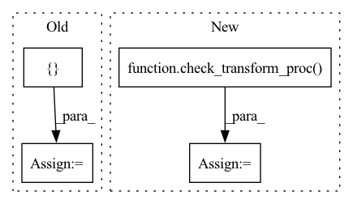

Pattern ID :10056

Before Change
}
def __init__(self, *args, **kwargs):
kwargs["labels"] = ["Ref($close, -2)/Ref($close, -1) - 1"]
super().__init__(*args, **kwargs)
After Change
return new_l
infer_processors = check_transform_proc(infer_processors)
learn_processors = check_transform_proc(learn_processors)
data_loader = {
"class": "QlibDataLoader",
"kwargs": {
In pattern: SUPERPATTERN
Frequency: 3
Non-data size: 4
Instances
Fragment ID: 35815792
Project Name: microsoft/qlib
Commit Name: 393584e535e3b9104199cddb20626619ce261cfe
Time: 2020-10-22
Author: afe.young@gmail.com
File Name: qlib/contrib/data/handler.py
M Class Name: Alpha158
N Class Name: Alpha158
M Method Name: __init__(8)
N Method Name: __init__(1)
M Parent Class: DataHandlerLP
N Parent Class: QLibDataHandlerV1
M File Name: qlib/contrib/data/handler.py
N File Name: qlib/contrib/data/handler.py
M Start Line: 78
M End Line: 80
N Start Line: 45
N End Line: 94
'>
Before Change
{"class": "DropnaLabel", "kwargs": {"fields_group": "label"}},
{"class": "CSZScoreNorm", "kwargs": {"fields_group": "label"}},
]
infer_processors = [
{"class": "ProcessInf", "kwargs": {}},
{"class": "ZscoreNorm", "kwargs": {"fit_start_time": fit_start_time, "fit_end_time": fit_end_time}},
{"class": "Fillna", "kwargs": {}},
]
After Change
fit_start_time=None,
fit_end_time=None,
):
infer_processors = check_transform_proc(infer_processors, fit_start_time, fit_end_time)
learn_processors = check_transform_proc(learn_processors, fit_start_time, fit_end_time)
data_loader = {
"class": "QlibDataLoader",
'>
Fragment ID: 35815793
Project Name: microsoft/qlib
Commit Name: d0ca52f3fdd34ea246751b94da69df588a50e7d0
Time: 2020-11-25
Author: Zhou.Dong@microsoft.com
File Name: qlib/contrib/data/handler.py
M Class Name: ALPHA360
N Class Name: ALPHA360
M Method Name: __init__(8)
N Method Name: __init__(6)
M Parent Class: DataHandlerLP
N Parent Class: DataHandlerLP
M File Name: qlib/contrib/data/handler.py
N File Name: qlib/contrib/data/handler.py
M Start Line: 98
M End Line: 106
N Start Line: 125
N End Line: 131
'>
Before Change
def __init__(self, start_date, end_date, processors=None, **kwargs):
if processors is None:
processors = ["PanelProcessor"] // V1 default processor
super().__init__(start_date, end_date, processors, **kwargs)
def setup_label(self):
After Change
return new_l
infer_processors = check_transform_proc(infer_processors)
learn_processors = check_transform_proc(learn_processors)
super().__init__(start_date, end_date, infer_processors=infer_processors, learn_processors=learn_processors, **kwargs)
def load_label(self):
'>
Fragment ID: 35815787
Project Name: microsoft/qlib
Commit Name: 10066ecf7976de22e5f03042335e95d20065084d
Time: 2020-10-17
Author: afe.young@gmail.com
File Name: qlib/contrib/data/handler.py
M Class Name: QLibDataHandlerV1
N Class Name: QLibDataHandlerV1
M Method Name: __init__(7)
N Method Name: __init__(4)
M Parent Class: ConfigQLibDataHandler
N Parent Class: ConfigQLibDataHandler
M File Name: qlib/contrib/data/handler.py
N File Name: qlib/contrib/data/handler.py
M Start Line: 26
M End Line: 28
N Start Line: 27
N End Line: 45